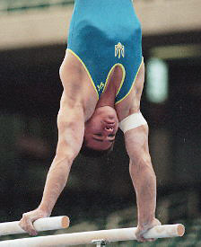

Rustam Sharipov (UKR)
1996 Olympic, World and European PB Champion

Medal Total
- Olympic Games: 2 Gold, 1
Bronze
- World Championships: 1
Gold, 1 Silver, 1 Bronze
- European Championships: 3
Gold, 1 Silver
Rustam was born on June 2, 1971 in Dushanbe,
Tajikstan. He was coached by Sergei Brizha at the Dynamo sports club in
Kharkov, Ukraine. Sharipov has two children (son Evgeny and daughter
Dasha) with his first wife, Tatiana. Divorced in 2000, he moved to the USA.
He's remarried to Amber; the couple has two daughters. Rustam is currently an
assistant coach at Oklahoma
University.
Competition Results
- 1988
- Jr. Friendship Tournament (Druzhba): 1st Team, 7th AA
1989
Jr. Friendship Tournament (Druzhba): 1st Team, 2nd AA, 1st V, 1st
HB
-
- 1990
- GER-USA-USSR Tri-Meet: 9th AA
- US Olympic Cup: 1st AA
-
- 1991
- DTB Cup: 2nd AA
- GER-USSR-CHN Tri-Meet: 11th AA
-
- 1992
- Chunichi Cup: 8th AA, 2nd PB, 2nd HB
- CIS Championships: 5th AA, 1st PB
- DTB Cup: 1st PB, 2nd PH, 2nd HB, 3rd R
- European Championships: 9th AA, 1st HB, 2nd PB,
4th R
- Moscow World Stars: 6th AA
- Olympic Games: 1st Team
- Tokyo Cup: 1st HB, 2nd PH, 2nd PB, 2nd R
-
- 1993
- American Cup: 4th AA
- Diet Coke Mixed Duos: 1st Team
- European Cup: 3rd AA, 2nd R, 3rd PB, 4th FX, 5th HB, 6th V
- International Championships of Romania: 1st AA, 1st R, 1st
PB, 1st HB
- Kosice International: 3rd AA
- Nikon International: 1st AA, 1st PB, 2nd FX, 2nd R, 7th HB,
8th V
- World Championships (Birmingham): 4th PB, 4th HB, 6th R
-
- 1994
- American Cup: 5th AA
- Chunichi Cup: 1st AA, 1st R, 2nd PB, 2nd HB, 3rd FX
- European Championships: 4th Team, 1st PB,
4th R
- International Mixed Pairs: 3rd AA
- Swiss Cup: 4th PB
- World Championships (Brisbane): 2nd PB,
6th R
- World Championships (Dortmund): 3rd Team
-
- 1995
- American Cup: 3rd AA
- Cottbus International: 1st PB, 3rd R
- DTB Cup: 4th PB, 8th FX
- European Cup: 5th AA
- French International: 4th AA, 1st PB
- International Championships of Romania: 1st AA
- World Championships (Sabae): 5th Team, 17th AA, 4th PB
-
- 1996
- Cottbus International: 7th PB, 7th HB
- European Championships: 1st PB
- French International: 2nd PB
- Olympic Games: 3rd Team, 1st PB
- World Championships (San Juan): 1st PB
-
- 1997
- American Cup: 7th AA
- Three-on-Three International: 2nd Team
- Messe Cup: 6th Team
- This page was created on April 19, 1997 and was last
updated on August 23, 2007.
© Gymn Forum